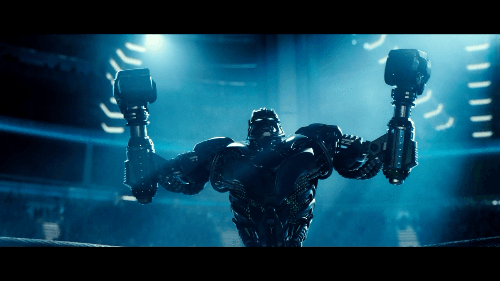

VALORACIÓN

Acero Puro es una pelicula dirigida a un publico joven(edad +10años) con una trama algo previsible queen ocasiones puedes saber perfectamente lo que va asuceder en la siguiente escena, pero en general es una pelicula entretenida que para su duracion, bajo mi opinion, es bastante buena aunque como ya dije para niños. Cuando yo vi esta pelicula era bastamte pequeño y no me plantearia verla nuevamente, no porque sea mala sino por miedo a arruinar mi vision sobre la pelicula. Para mi cuando la vi y según los recuerdos que tengo se lleva las 4 estrellas (★★★★☆)
Para VOLVER